史跡探索コース
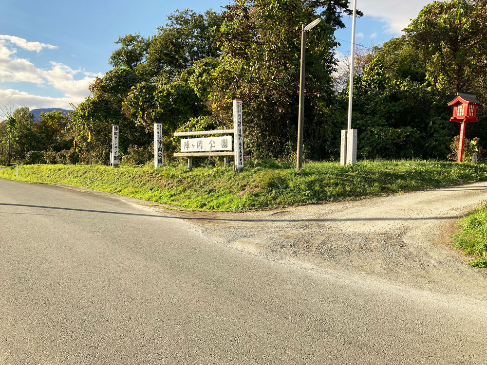
紫波の歴史的なスポットを、中央エリアの範囲でお手軽に巡れるコースです。
神社巡りや陣ヶ丘公園では、
自然のエネルギーを感じられる、リフレッシュスポットとなっています。
移動時間
約80分
※滞在時間を除く
このコースの移動範囲：中央エリア
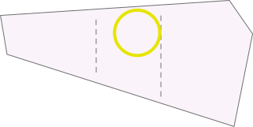
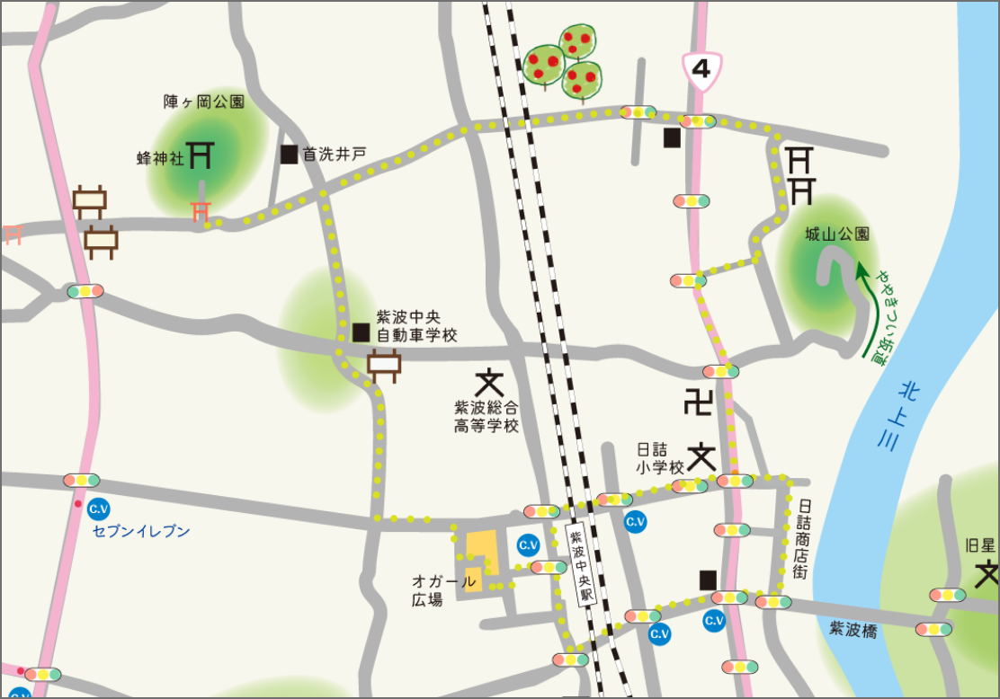
移動時刻シミュレーション
※サイクリング推奨時間帯9:00〜18:00
（▼時計クリックで時刻選択）
に出発！
※滞在時間は含まれませんので、大まかな目安としてお使いください。
※下記のブラウザ以外では動作しないことがあります。
- PC(Google Chrome, Microsoft Edge)
- スマートフォン(Safari, Google Chrome)
①スタート：紫波中央駅
10分
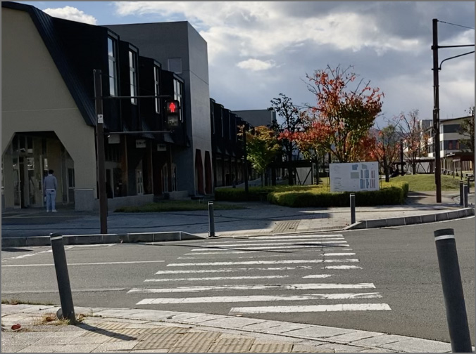
その名の通り、紫波の中央にある駅の前から出発。
目の前には「オガール」の入り口があり、レンタサイクルをする方はその場からサイクリングを始められます。
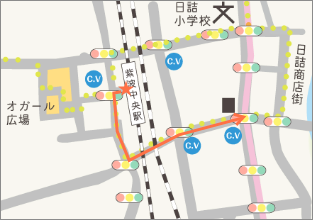
②日詰商店街（南入口）
10分
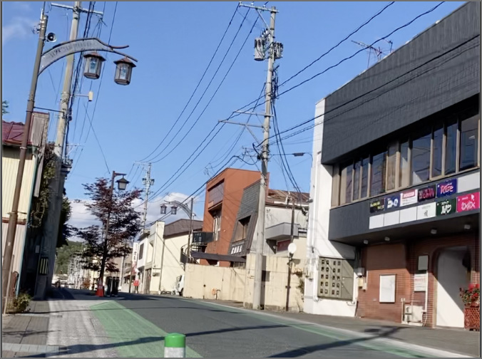
国道４号線の大きな交差点を直進すると、日詰商店街の大通りへの入り口に続きます。
南入口から入ってすぐの場所には「平井邸」が待ち構えています。
※通常は閉門していますが、時々イベントで開放され、中を見学することができます。
日詰商店街には様々な食べ物や雑貨のお店が並んでいます。
時間にゆとりがあれば自転車を止めて、気になるお店を訪れるのも、一つの紫波サイクリングの楽しみ方です。
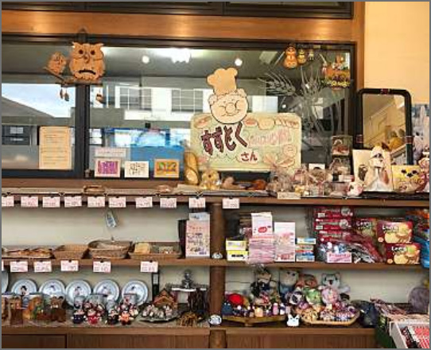
TIPS
大通りを少し外れると、中にはこんな隠れ家のような喫茶店も！探索のし甲斐があるスポットです。（喫茶店「エーデルワイス」）
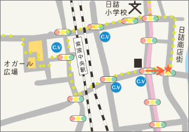
③勝源院
5分
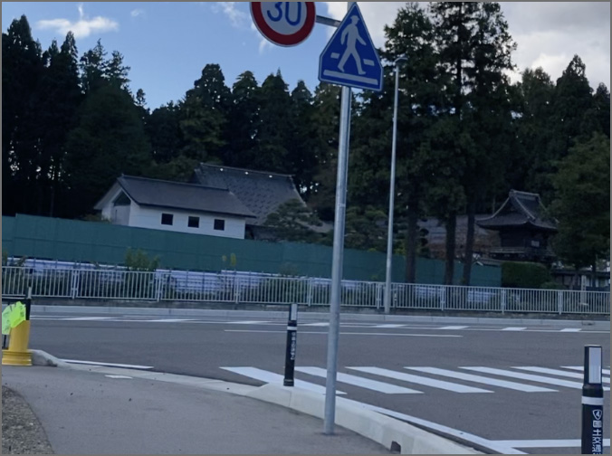
日詰商店街を通り抜けて再び国道４号線へ出た先には、「勝源院」というお寺が左手に見えます。
中には「逆ガシワ」という珍しい樹木があります。気になる方はぜひお立ち寄りください。
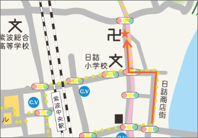
④本誓寺前 信号交差点
5分
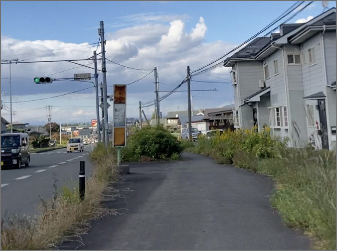
勝源院の近くの信号（城山公園前）の次の、「本誓寺前」の看板がある信号交差点を右に曲がり、突き当たりまで直進します。T字路で左折し、その道をまっすぐ進んでください。
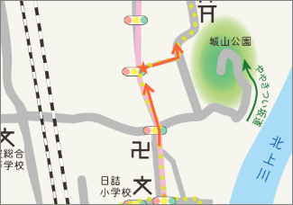
⑤走湯神社
5分
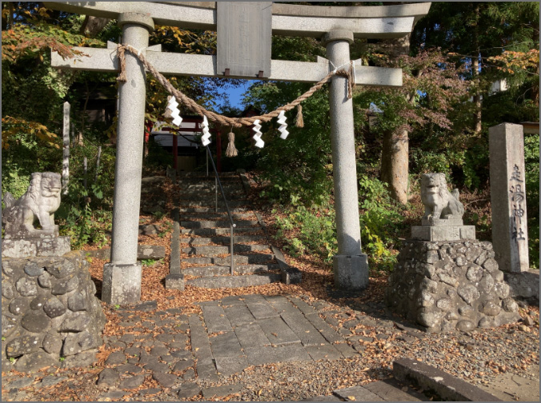
脇道に入らず直進すると、右手に「走湯神社」が現れます。 平泉や源氏にゆかりのある史跡で、紫波の歴史のつながりを感じることができます。
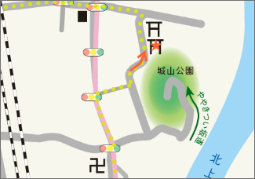
⑥木宮神社
5分
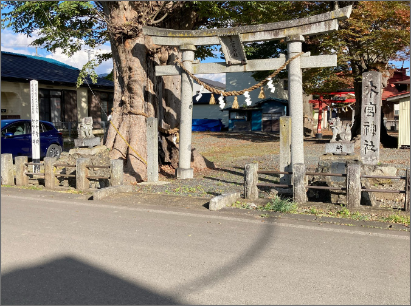
⑤の神社前の道を再び北上すると、またもや右手に「木宮神社」が見えます。かの有名な将軍・坂上田村麻呂が関わる神社です。
境内の樹齢300年以上の巨大なケヤキ群が特徴的です。
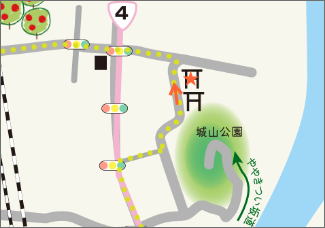
⑦古舘グリーンハウス
3分
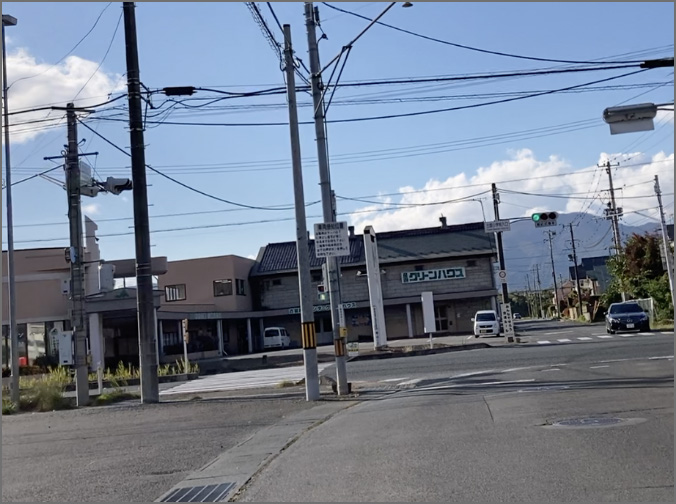
T字路を左折し、直進すると国道４号線の交差点に着きます。その向こう側に「古舘グリーンハウス※」の建物があります。
※2023年現在、産直コーナーは閉店しています。
グリーンハウスの南側の建物には、「もちの里小昼ハウス」という和菓子屋があります。
（日・木 定休日）
開店日ならラッキー！中間地点の休憩におすすめです。
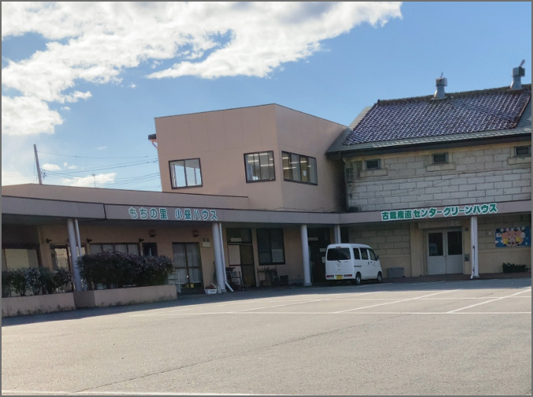
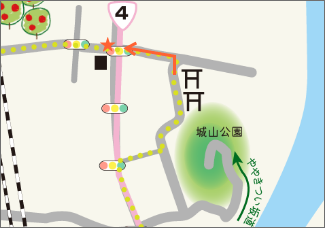
⑧JR新幹線 高架下
10分
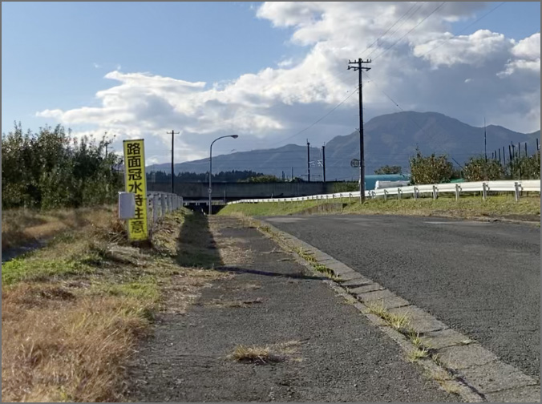
⑦古舘グリーンハウス脇の道路を直進すると、両脇のりんご畑が見えてきます。
TIPS
5月（開花時）、9〜10月（結実）が見どころ時期です。
最初のりんご畑を抜けると新幹線の高架下があるので、そのまま通り抜けます。
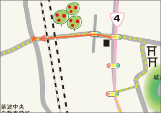
⑨陣ヶ丘公園
8分
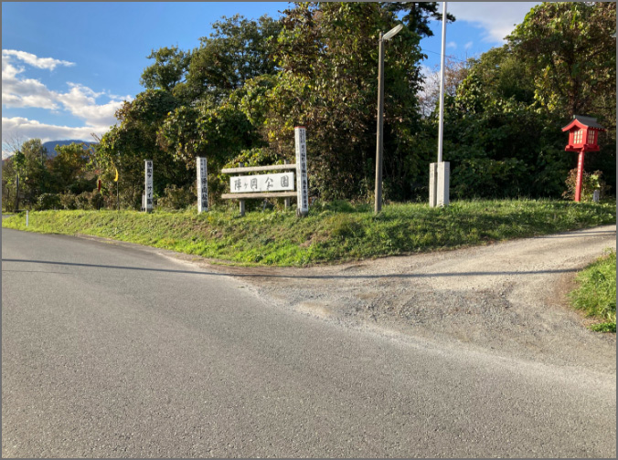
しばらく直進すると、右手に「陣ヶ丘公園」と赤い鳥居の「蜂神社」の看板が見えてきます。
神社入り口のあじさいロードや、ひっそりとした木々の中の公園は、自然の癒しスポットとなっています。
自然が多い地域なので、熊の出没の可能性が高くなっています。立ち寄りの際は、熊トラブルガイドをご確認のうえ、注意してお通りください。
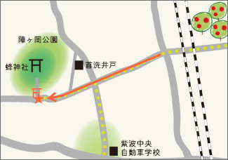
⑩紫波中央自動車学校交差点
10分
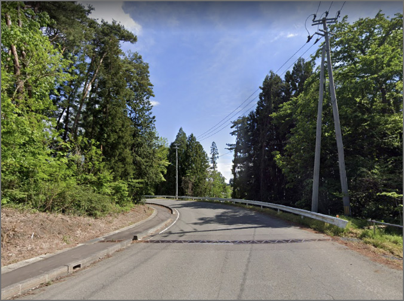
陣ヶ丘公園から戻った付近の交差点を右折し、直進すると、左手にある「紫波中央自動車学校」の看板が見えます。 そこを目印に、また同じ方向に直進してください。
この木々に囲まれた下り坂のサイクリングは気持ちがいいこと間違いなしです。
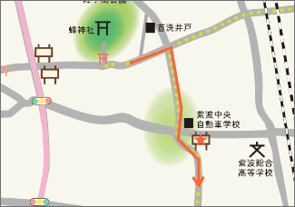
⑪紫波町役場・オガール広場
3分

下り坂を抜けた先の田園地帯を直進します。右手の「紫波中央自動車学校」の青い看板のある交差点を左折、直進先の住宅街手前の交差点を右折。公園手前の交差点を左折後直進して「紫波町役場」「オガール」の潤に辿り着きます。
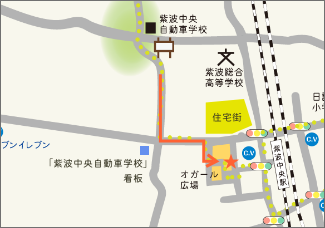
⑫ゴール：紫波中央駅前
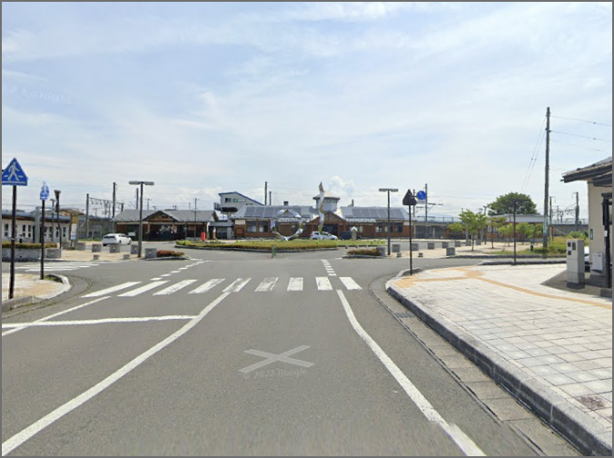
オガールを通り抜けた先に、銀色の輪っかと棒状のオブジェが見えてきたら、コースのスタート地点・紫波中央駅へとゴール！
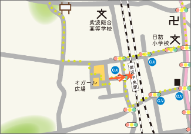